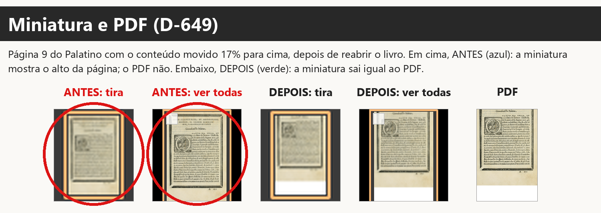
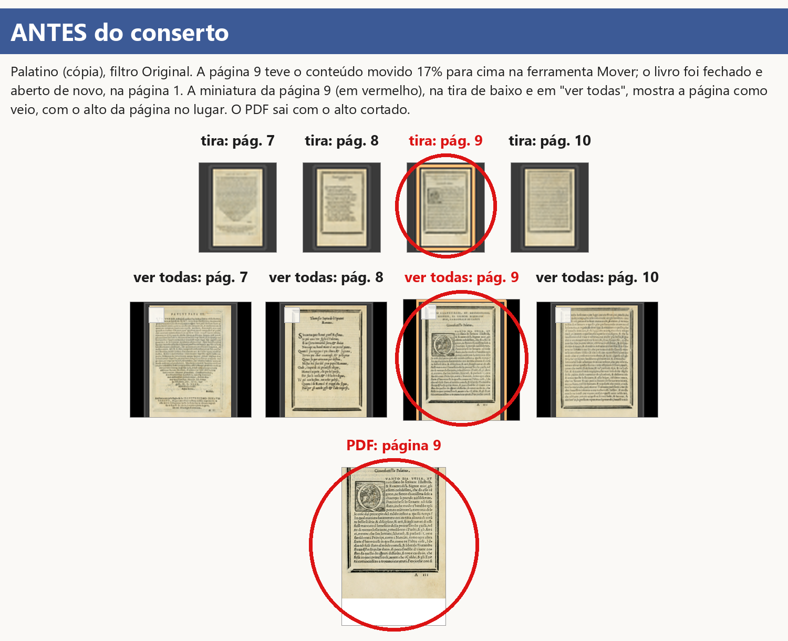
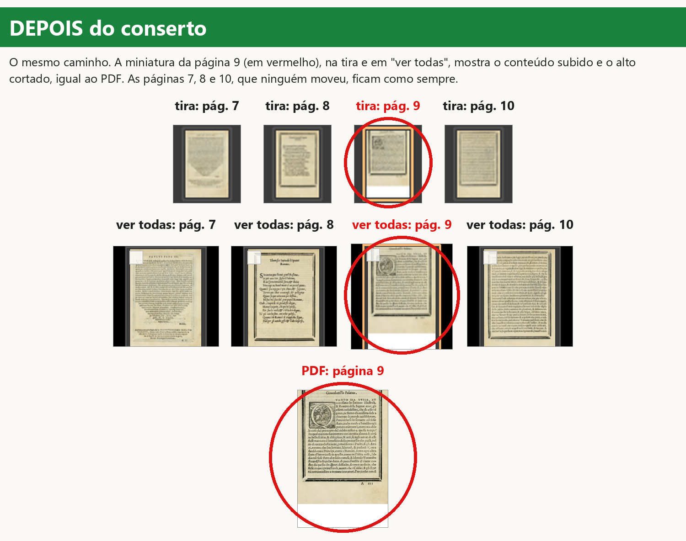
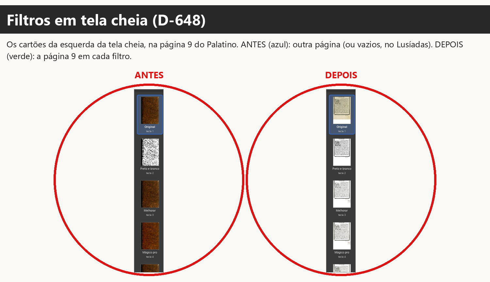
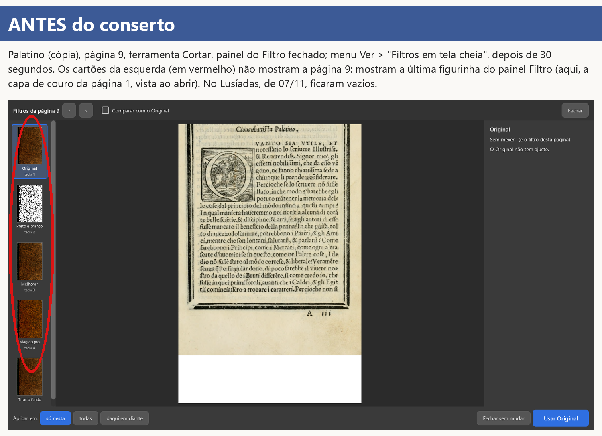
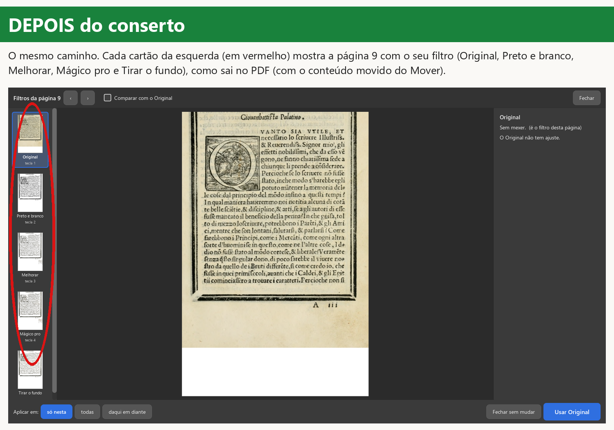
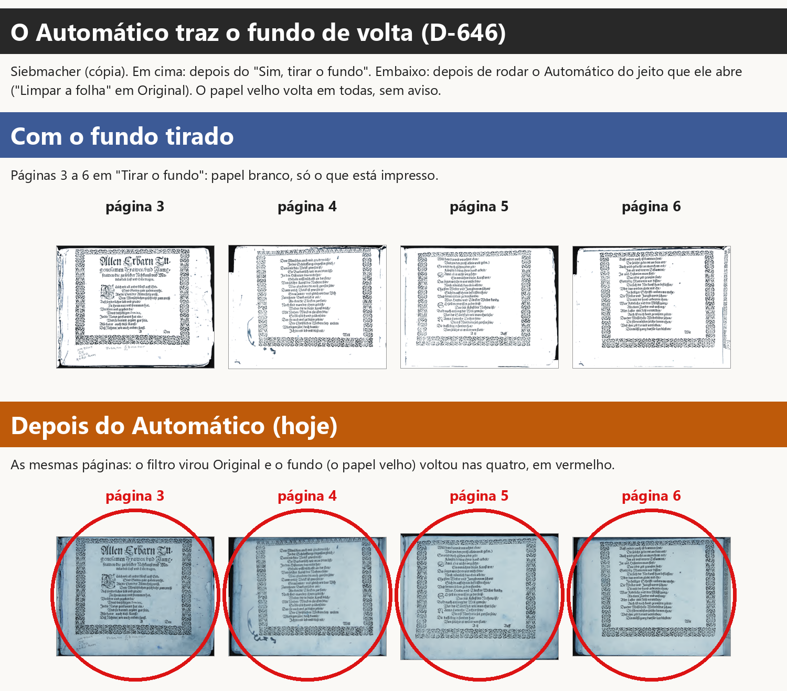

Ramo graves-2026-11-10 (a partir do obra-2026-10-26 em 58806f81), worktree
.claude/worktrees/graves. Pedido da gerente de 10/11 (Samuel: "pode ser"). Achados no teste como o
Kaique de 07/11 (versão 6904a634; relatório fora do git em
.claude/worktrees/teste-kaique-funcoes/relatorios/teste-kaique-funcoes/). Nenhuma página dos
Lusíadas foi copiada para o git: os prints usam o Palatino e o Siebmacher (domínio público).
| Defeito | Situação |
|---|---|
| 1. Tela, miniaturas e PDF diferentes; a folha espremida (D-649, D-547, D-473) | consertado (1e04573b, 6d13ccfc) |
| 2. O Automático desfaz o "Tirar o fundo" (D-646, D-134) | parado: pergunta ao Samuel (nome e lugar da opção; muda o formato do projeto e testes antigos) |
| 3. Cartões de "Filtros em tela cheia" vazios (D-648, D-184, D-192) | consertado (bcd49735) |
tests/test_decisoes_9b2.py::test_d547_*, que confere "as outras: cruas"). Não mudou.test_d473_d064_*). Não mudou.tests/test_decisoes_gravura_a_mao.py::test_d659_a_tela_nao_troca_a_previa_pela_folha_crua).tests/test_filtros_tela_cheia.py, 11 provas); a página grande já usava a conta do PDF.tests/test_tirar_fundo_no_programa.py, 54 provas, entre elas
test_original_nao_mexe_na_pagina, test_outro_filtro_nao_tira_o_fundo, test_alerta_sai_quando_a_pagina_sai_do_filtro).Defeito 1. Antes: Kaique move o conteúdo da página 5 para cima no Mover, fecha e reabre o livro; a miniatura da página 5 (embaixo e em "ver todas") mostra o título no lugar; o PDF sai sem o título. Depois: a miniatura da página movida mostra o que vai sair no PDF (o título fora), embaixo e em "ver todas", mesmo sem visitar a página (a prévia dela é feita por trás, depois da página da vez; leva um ou dois segundos). As páginas que ninguém moveu ficam como sempre. O PDF não muda (a conta é a mesma, agora num lugar só). A folha espremida no Mover e na Mão (que fez o "Centralizar" gravar errado) já tinha sido consertada em 09/11 e não volta.
Defeito 3. Antes: Ver > "Filtros em tela cheia" com outra ferramenta e o painel do Filtro fechado: os quatro cartões da esquerda cinza para sempre (ou, se o painel Filtro mostrou outra página antes, as figurinhas DAQUELA página: no Palatino, a capa de couro no lugar da página 9). Depois: cada cartão aparece com a página no seu filtro, a mesma imagem da página grande quando ele é escolhido (com o "Só as letras", a gravura respeitada, a página movida), em poucos segundos. Nada muda no PDF.
Defeito 2. Não mudou nada (ver "Perguntas para o Samuel").
6904a634, o acerto por trás da página com a marcação
provisória devolvia a FOLHA CRUA como "a imagem do PDF", e a tela a esticava para a forma da página; o
"Centralizar" mediu essa imagem e gravou o conteúdo 17% para cima: por isso o PDF saiu sem o título. Consertada na
origem em 09/11 (88731637); a prova do D-659 falha no 6904a634 ("devolveu a folha crua como se fosse o desenho
do PDF"). (b) A miniatura só era composta como no PDF se a prévia da página ainda estivesse guardada (as últimas
30 visitadas): depois de reabrir o livro ela ficava com a página como veio, e a grade "Todas as páginas" nunca
compunha. Além disso a conta "como sai no PDF" estava escrita três vezes (PDF, tela, Automático: revisão M2).core/pipeline.renderizar_com_filtro, a da página grande da tela cheia, do cartão "Tirar o
fundo" e do "comparar") desenhava a cópia sem a marca de "filtro escolhido à mão" que a tela grava ao escolher: o
Preto e branco aparecia em Original, e depois de "Usar" a página saía em Preto e branco. Agora a cópia leva a
marca (o mesmo que escolher).core/pipeline.compor_como_no_pdf: margens iguais + página movida/na folha escolhida. Usada pelo PDF
(_pagina_pronta), pela tela (ui/tela_conferir._como_sai_no_pdf, que serve cartões, lado a lado, antes/depois,
tela cheia e miniaturas) e pela prévia do Automático (core/automatico.como_sai_na_tela). Antes: três cópias.TelaConferir.miniatura_como_sai), a mesma na tira e na grade.FiltrosEmTelaCheia._imagem).core/pipeline.garantir_selecao nem em core/filtros._limpar_o_papel_de_verdade (outro agente).prints/), testes de decisões, teste_botoes.py.No PC (um arquivo por vez, sem janela, prioridade baixa, LOCALAPPDATA à parte):
- tests/test_decisoes*.py: os 55 arquivos passam. Um deles,
test_decisoes_desfazer_pagina.py::test_d621_cada_etapa_sozinha_volta_so_ela_so_nesta_pagina[cortar], falhou UMA
vez com a primeira versão do conserto 1 ("selecao" mudou): a miniatura que faltava era pedida pela prévia normal,
que desenha na página de verdade e remonta a marcação. Causa tirada no 6d13ccfc (a miniatura é desenhada numa
cópia); o teste antigo não foi mexido e passa (duas vezes seguidas).
- Arquivos tocados e vizinhos: test_decisoes_9b2 (30), test_filtros_tela_cheia (11), test_tirar_fundo_no_programa
(54), test_misto_no_programa (41), test_misto_consertos (25), test_miniaturas_novas (5), test_margens_na_tela
(4), test_core (62), test_camadas (64 + 26 pulados), test_promessas (268 + 1 xfail), test_etapa10b_imagem,
test_para_revisar_na_tela, test_livro_aberto, test_cadernos, test_avisos, test_corte_pelo_conteudo_livro,
test_margens_scantailor, test_girar_cartoes_e_previas, test_menus_que_nao_faziam_nada: todos passam.
test_decisoes_girar_capa.py caiu uma vez sem mensagem (o processo fechou depois do 1º teste) e passou inteiro
(26) ao rodar de novo: instabilidade, sem relação achada.
- teste_botoes.py: 374 ações, 0 falhas.
No GitHub:
- 42936381314 (commit bcd49735): verde na 2ª tentativa. Na 1ª, só test_dialogo_impressao.py caiu com o código
3221226505 (o processo fechou DEPOIS dos 5 testes passarem; não toca nada deste conserto).
- 42944019482 (commit 6d13ccfc, o final do código): verde na 1ª tentativa (suíte nas 5 partes + botões e prints).
- Filtro de velocidade 42936386218 (obra-2026-10-26 -> graves-2026-11-10, disparado no bcd49735; o 6d13ccfc só
muda a miniatura e o desenho dos cartões, nada do PDF): "igual (dentro do vai-e-vem)" (abrir o livro -0,8%,
trocar de página -0,4%, Mágico pro +0,2%, Preto e branco -1,1%).
tests/test_graves_d649_miniatura_igual_ao_pdf.py::
test_d649_b_a_miniatura_da_pagina_movida_sai_como_o_pdf_depois_de_reabrir (medida: onde começa a tinta na
miniatura da tira e da grade = no PDF, até 3% da altura). Falha no obra 58806f81 ("não aconteceu a tempo: a
miniatura da página movida composta como no PDF"), passa no novo. Prints d649-*.png.tests/test_decisoes_gravura_a_mao.py::test_d659_a_tela_nao_troca_a_previa_pela_folha_crua falha no 6904a634
(a versão do teste de 07/11: "devolveu a folha crua como se fosse o desenho do PDF") e passa hoje. Guarda nova:
test_d649_a_o_mover_mostra_a_pagina_e_nao_a_folha_espremida.core/pipeline.compor_como_no_pdf) para o PDF, a tela e o
Automático; as provas antigas da D-547/D-473 (tests/test_decisoes_9b2.py, 30) passam.tests/test_graves_d648_cartoes_da_tela_cheia.py (medida: cada cartão recebe a página
com tinta; Preto e branco com menos de 5% de meios-tons, Original com o papel amarelado). A prova da janela falha
no obra 58806f81 ("não aconteceu a tempo: os quatro cartões com a página"); a da conta no livro novo também
(o Preto e branco saía em Original). As 11 provas antigas da tela cheia passam. Prints d648-*.png.d646-pergunta.png.Pergunta 1 (D-646, o fundo que volta). Print: relatorios/graves-2026-11-10/prints/d646-pergunta.png.
Hoje "Tirar o fundo" é um filtro da página. Por isso qualquer outro filtro, inclusive o "Original" que o Automático
põe, traz o papel velho de volta. Para cumprir "nenhum filtro deve fazer o fundo voltar", proposta:
Pode ser assim (nome e lugar)? Sim ou não; se não, diga o nome e onde.
O que isso muda no que já foi escolhido e testado (D-605), e por isso não fiz sem perguntar:
- Hoje escolher "Original" numa página em "Tirar o fundo" traz o fundo de volta (é assim que a D-069, "voltar ao
original", funciona hoje: pelo Automático com Original). Com a proposta, "Original" vira "sem filtro, sem o fundo".
- Provas antigas que cobram o jeito de hoje e passariam a falhar: tests/test_tirar_fundo_no_programa.py
(test_original_nao_mexe_na_pagina, test_outro_filtro_nao_tira_o_fundo,
test_alerta_sai_quando_a_pagina_sai_do_filtro) e a frase de ui/janela_principal._tirar_o_fundo_do_livro_inteiro
("Original volta ao como veio").
- O projeto ganha um campo por página ("fundo tirado"), separado do filtro (CLAUDE.md §6: mudar o formato dos
arquivos de dados). Projetos antigos: a página em "Tirar o fundo" abre com o fundo tirado e o filtro Original.
Pergunta 2 (D-649, só para confirmar o alcance). Consertei a miniatura da página MEXIDA (movida, aumentada ou numa folha escolhida): agora ela sai igual ao PDF. As miniaturas das outras páginas continuam mostrando a página como foi escaneada (colorida, sem o filtro e sem o corte), como foi decidido na D-547 e como os testes cobram. Quer que TODAS as miniaturas mostrem a página já com o filtro e o corte, como no PDF? (Sugestão: não por agora; isso faz o programa desenhar o livro inteiro por trás ao abrir, e deixa a primeira abertura mais lenta.)
ui/tarefas.GerenciadorPrevias.
_por_a_imagem_do_pdf, cv2.resize para o tamanho da prévia). Foi isso que transformou o erro de 07/11 (a folha
crua devolvida no lugar da página) numa "folha espremida" em vez de um erro visível. Sugestão: recusar uma imagem
de outra proporção (registrar no erros.log e manter a prévia). Não fiz: não é a causa, e muda o caminho da D-473.core/pipeline.
_sem_fundo_da_folha). Não mexi (não pedido; aviso novo pede decisão).core/pipeline.garantir_selecao e core/filtros: eu não toquei nessas
funções; meu core/pipeline.py muda só o fim de _pagina_pronta, acrescenta compor_como_no_pdf e mexe em
renderizar_com_filtro (a marca de filtro escolhido à mão na cópia).ui/tarefas.TarefaConferirOImpressoDeFora) faz a sua própria conta de
margens + medida; poderia chamar compor_como_no_pdf(anotar_o_de_fora=...).(nenhum novo além dos achados acima)







Editor de Impressão · gerado em 10/11/2026 às 22:33